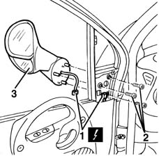

7005R30 electrically controlled door mirror (one) - r+r
- Path
- Procedures > 70 FITTINGS > 7005 PASSENGER COMPARTMENT FRONT SIDE DOORS > 7005R front door mirrors > 7005R30 electrically controlled door mirror (one) - r+r
- Kind
- repair procedure (removal / refitting; the operation number is the code)
- Applies to
- all engines; all production periods
- Interactive page
- https://sloeber94.github.io/elrnDB-fMltpl/en/#/2892057
Applies to: all engines; all production periods
 Removing
Removing
 Refitting
Refitting7005E34 internal or external panel on front side door frame r r
1. Disconnect the electrical connections for the door mirror.
 | Name | Connector |
|---|---|---|
1 | Left door mirror |
| Name | Connector |
|---|---|---|
1 | Right door mirror |
2. Undo the bolts securing the door mirror.
3. Remove the door mirror.

Applies to: all engines; all production periods
Refitting
RemovingCheck that the door mirror is not damaged.
Fit the door mirror and tighten its bolts.
Connect the electrical connection.
Check that the door mirror works properly.
7005E34 internal or external panel on front side door frame r r
Topics linked from this page (3)
- 7005E34 internal or external panel on front side door frame r r
- P60 Left door mirror
- P61 Right door mirror